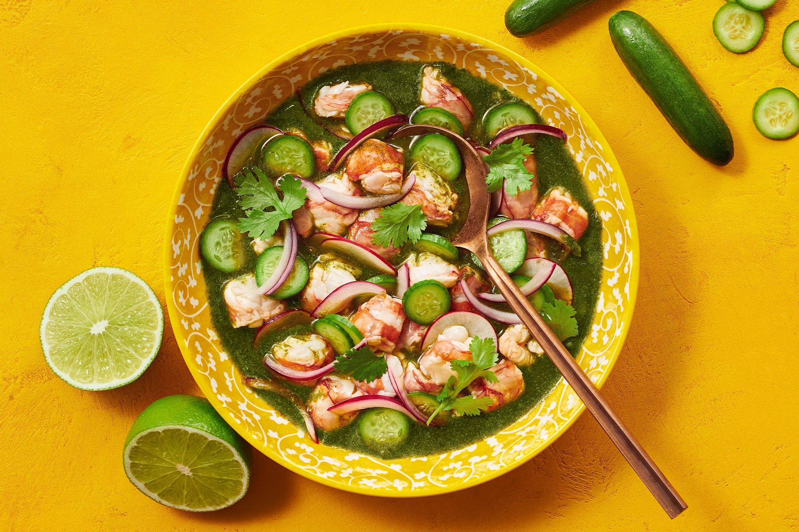

Aqua Chile

Description
Aqua Chile is a vibrant and refreshing Mexican dish that showcases the bright flavors of lime, cilantro, and fresh chilies. Originating from the coastal regions of Mexico, it features raw shrimp marinated in lime juice, which effectively "cooks" the shrimp through a process similar to ceviche. The dish is renowned for its zesty and spicy profile, complemented by the cooling crunch of cucumber and the sweetness of tomatoes.
This dish is typically served cold, making it a perfect appetizer or light meal for hot weather. The agua chile combines the tanginess of lime juice and the heat of fresh chilies with the freshness of raw seafood, creating a complex and exhilarating flavor profile. Garnished with creamy avocado and enjoyed with crispy tostadas or tortilla chips, agua chile offers a delightful balance of textures and flavors that reflects the lively and dynamic nature of Mexican cuisine.
Ingredients
- Fresh Raw Shrimp
- Lime Juice
- Cilantro
- Jalapeño or Serrano Peppers
- Garlic
- Cucumber
- Red Onion
- Tomatoes
- Avocado
- Salt
- Black Pepper
- Tostadas or Tortilla Chips
Steps
- Prepare the Shrimp: In a bowl, toss the raw shrimp with a generous amount of lime juice. The acidity of the lime juice will "cook" the shrimp by denaturing the proteins. Let it marinate for about 20-30 minutes, or until the shrimp turns opaque.
- Prepare the Chile Sauce: In a blender or food processor, combine chopped jalapeño or serrano peppers, minced garlic, and a handful of cilantro. Blend until smooth, adding a bit of water if necessary to achieve a sauce-like consistency.
- Combine Ingredients: Add the chile sauce to the marinated shrimp and mix well. Stir in the diced tomatoes, sliced cucumber, and red onion.
- Season: Taste and adjust the seasoning with salt and black pepper as needed.
- Chill: Let the mixture sit in the refrigerator for an additional 10-15 minutes to allow the flavors to meld.
- Serve: Garnish with additional chopped cilantro and avocado slices.
- Enjoy: Serve the agua chile with tostadas or tortilla chips for a crunchy accompaniment.